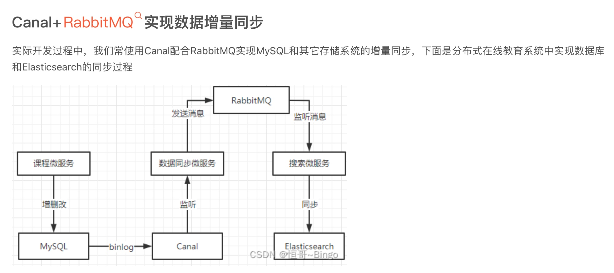
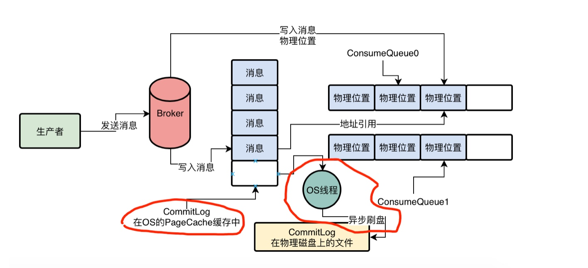

RocketMQ

内存泄露问题

- 核心要点
-
- 在前端/客户端设置秒杀答题，错开大量人下单的时间，阻止作弊器刷单
-
- 独立出来一套秒杀系统，专门负责处理秒杀请求
-
- 优先基于 Redis：进行高并发的库存扣减，一旦库存扣完则秒杀结束
-
- 秒杀结束之后，Nginx 层过滤掉无效的请求，大幅度削减转发到后端的流量
-
- 瞬时生成的大量下单请求直接进入 RocketMQ 进行削峰，订单系统慢慢拉取消息完成下单操作
数据增量同步


rocketmq架构

写入消息

- 每个 Topic的数据都是分布式存储在多个 Broker 中的，比如下面的图里我们会看到这个示意。
producer
- SendLatencyFaultEnable
- 就可以避免一个 Broker 故障之后，短时间内生产者频繁的发送消息到这个故障的 Broker。上去，出现较多次数的异常。而是在一个 Brokert 故障之后，自动回避一段时间不要访问这个 Broker，过段时间再去访问他。
- CommitLog 消息顺序写入机制
- topic/queueid/fileName
- fileName存储的是消息在commit-log中的物理位置
- ConsumeQueue0 中存储的是一个一个消息在 CommitLog：文件中的物理位置，也就是 offset
Commitlog提升性能
- PageCache
- 顺序写
- 
基于DLedger技术替换Broker的CommitLog

- 在三台 Broker 机器刚刚启动的时候，就是靠这个 DLedger 基于 Raft 协议实现的 leaderi 选举机制，互相投票选举出来一个 Leader，其他人就是 Follower，然后只有 Leaderi 可以接收数据写入，Follower 只能接收 Leaderl 同步过来的数据。
- 数据同步会分为两个阶段，一个是 uncommitted 阶段，一个是 commited 阶段
基于DLedger的集群运行
-
- Broker 高可用架构原理回顾：多副本同步+ LeaderE 自动切换
-
- 基于 DLedger 技术管理 CommitLog
-
- Broker 集群启动时，基于 DLedger 技术和 Raft 协议完成 Leaderi 选举
-
- Leader Broker写入之后，基于 DLedger 技术和 Raft 协议同步给 Follower Broker
-
- 如果 Leader Brokerj 崩溃，则基于 DLedger 和 Raft 协议重新选举 Leader
消费者组

基于os—cache性能提升

Master Broker 什么时候会让你从 Slave Broker 拉取数据？
- 你当前没有拉取消息的数量和大小，以及最多可以存放在 os cachel 内存里的消息的大小，如果你没拉取的消息超过了最大能使用的内存的量，那么说明你后续会频繁从磁盘加载数据，此时就让你从 slave broker：去加载数据了